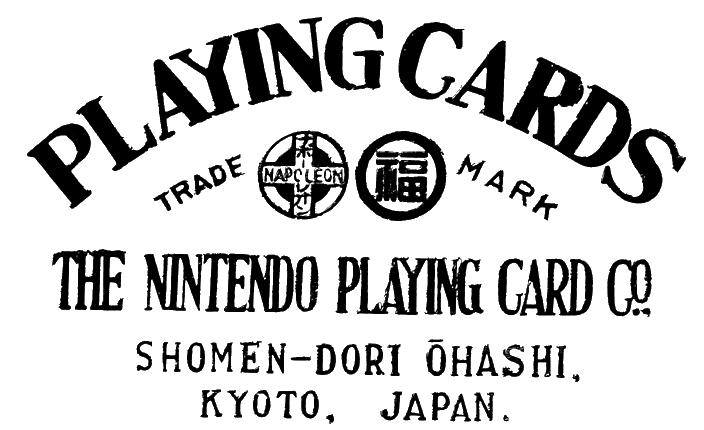

II) Le jeu vidéo comme levier d’impulsion : le cas Nintendo
A) Nintendo, entre jeux de carte et ambitions de diversification
Nintendo Koppai est une entreprise fondée en 1889 par Fusajiro Yamauchi dont l’activité principale était artisanale, la confection de cartes à jouer. Ce n’est qu’à partir de 1949, avec l’arrivée de Hiroshi Yamauchi, que l’entreprise prendra le chemin de la diversification de ses activités avec le développement de portions de riz individuelles, la gestion de compagnie de taxis ou encore la gestion d’une chaine d’hôtel (Love Hôtel). L’entreprise prendra diverse noms comme celui de Nintendo Playing Cards Co. Ltd.
C’est durant les années 1970, que Nintento va se tourner vers le jeu vidéo. Il va créer des jeux pour les bornes d’arcade (Mario et Donkey Kong) mais va aussi collaborer avec Magnavox à la création de la première console de salon : l’Odyssée (1972). Mais la première console officielle de Nintento sera la Color TV Game 6 sortie en 1977. Par la suite Nintendo va partir à la conquête du monde en s’implantant notamment sur le continent américain.
B) La domination de Nintendo
C’est dans les années 1980, que Nintendo va rencontrer le début de son succès. En effet, en 1983, Nintendo sort la Famicom, aussi appelé Nintendo Entertainment Système (NES) en Europe et en Amérique. Malgré les efforts de SEGA, Nintendo restera le maître incontesté avec la NES qui verra naitre les plus grandes licences de Nintendo comme Métroid, Super Mario Bros ou encore The Legend of Zelda. A la fin des années 1980, Nintendo contrôle près de 90% du marché des consoles et est plus rentable que Toyota et un foyer sur deux a une Famicom. En 1989, Nintendo sortira la célèbre Game Boy qui, encore une fois, écrasera Sega qui sortira quelque temps plus tard sa Game Gear.
Nintendo s’imposera durant plus d’une décennie face à tous ces concurrents même si la société connaitra quelques échecs commerciaux comme la Virtual Boy ou la relance de Sony qui reprendra une partie du marché de Nintendo avec sa Playstation. Cependant, Nintendo sortira sa Nintendo 64 entre 1996 et 1997 et affichera des ventes approchant les 49 millions d’exemplaires vendu en 1998. Nintendo lancera aussi durant cette période l’une de ces plus grandes licences, un jeu nommé Pokémon sortira su Game Boy en 1995. Ainsi, malgré des difficultés, Nintendo reste donc dans la course face à la montée des concurrents.
C) Nintendo en perte de vitesse
Les années 2000 verront se maintenir le succès de Nintendo, malgré l’arrivée de
plus en plus de concurrents sur le marché, ce n’est qu’à partir de 2004 que Nintendo sera de retour avec des produits innovants sur le marché, comme avec la Nintendo DS, console portable la plus répandu à l’heure actuelle. Cependant, Nintendo n’arrivera pas à retrouver sa supériorité sur le marché des consoles de salon, maintenant dominé par la Playstation et la Xbox de Microsoft. Nintendo se concentre alors sur les consoles portables pour sortir en 2016 la Nintendo Switch. Ainsi, Nintendo, entreprise artisane spécialisée dans la création de carte à jouer va essayera de se diversifier et va choisir comme voie principale celle du jeu vidéo où elle va devenir l’un des leaders sur le marché.
Cliquez ici pour aller à la conclusion
Developpé par Limou & Pauwels, contactez-nous ! Copyright: 2017-2018